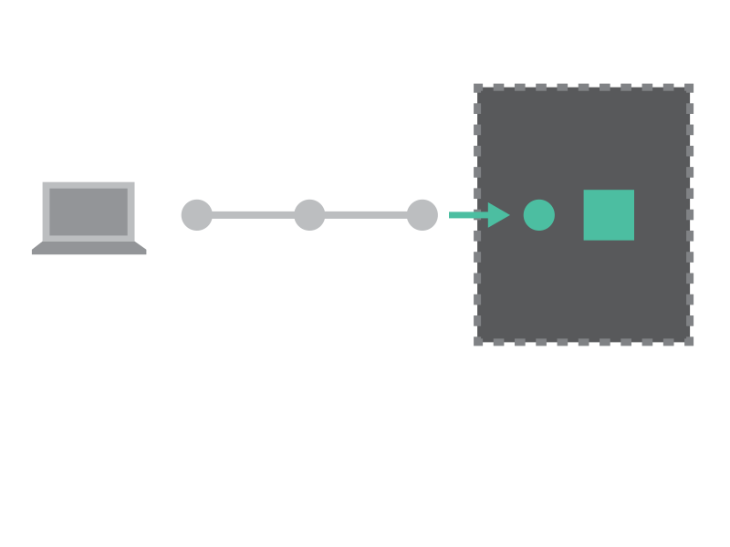
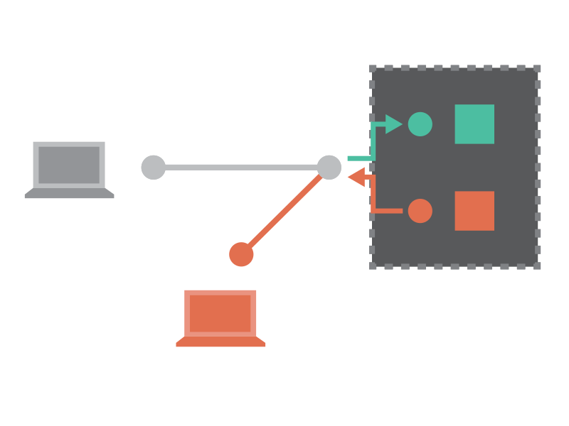
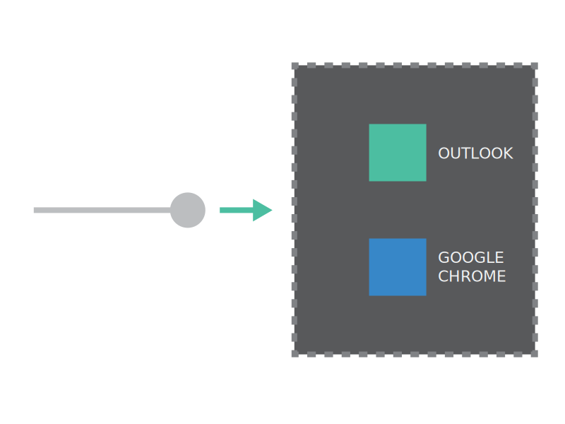
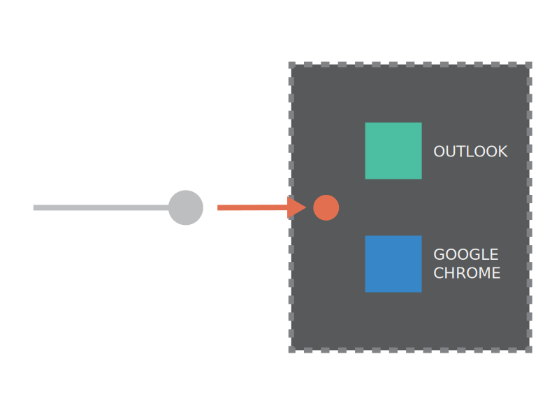
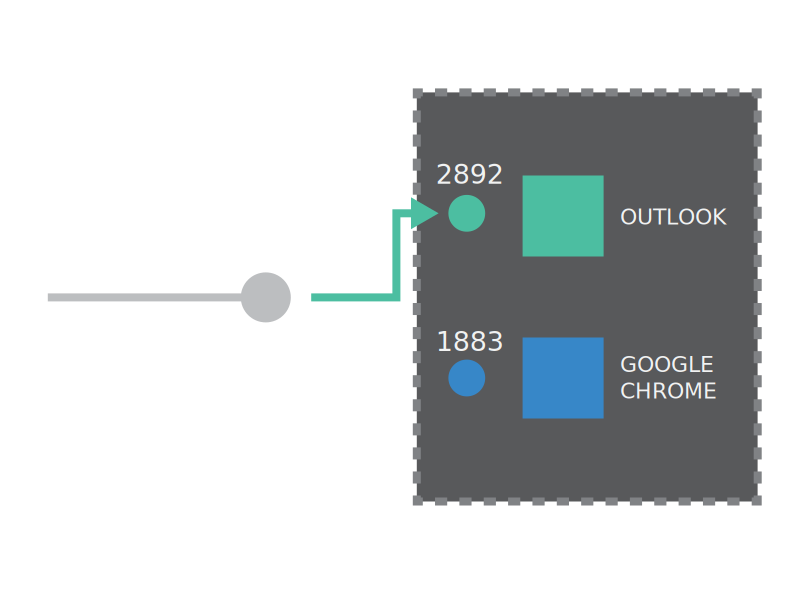

### Defining Artificial Intelligence in 2018 ##### Tech Myth Busting Cycle Wednesday 14th March 2018 We_Start
##### Nicolas Conti nicolas.conti@sciencespo.fr ##### Julien Denes julien.denes@sciencespo.fr ##### Alexis Thual alexis.thual@polytechnique.edu
### The Tech Myth Busting Cycle #### Course Organization Hacking, Cybersecurity and Law Defining Artificial Intelligence in 2018 AI, Data and Public Policy
### The Tech Myth Busting Cycle #### Two main goals * Demystify core concepts * Show things
### Three crucial ideas today * Artificial Intelligence (AI) is a broad concept, its meaning has evolved over time. * Modern AI is rather a set of complex statistical methods. * AI is not a black box: we design them, we understand what they do, we control them.
### Three demos today * Demo 1 * Demo 2 * Demo 3
### Demo I ##### Something
## "Artificial Intelligence": an evolutive concept
What is AI among... * Siri * Face ID * Spelling checker * Google's suggestions * Chess playing bot * Enigma * Fingerprint recognition system * Route suggestion * Storm detection
## "Artificial Intelligence": an evolutive concept AI is a process producing a result given a specific task. The goal: automation of tasks
## "Artificial Intelligence": an evolutive concept Key differenciation: rules vs statistics Explaining different components if AI? Machine Learning, Operational Research, Graph exploration, Multi-Agents Systems, etc.
## "Artificial Intelligence": an evolutive concept Machine Learning (statistics) is the popular one nowedays, nearly a synomym of AI even if actually included in the concept. But used to be inverse (The future of AI is in symbolic reasoning?)
## Machine Learning: AI as statistical reasoning
## Machine Learning: AI as statistical reasoning Machine learning cover a wide range of statistical methods. They all work the same way: * you give them inputs (images, features of a person...) * you tell them what you want them to predict (topic of the image, what the person will buy) * they output you what they think is the most likely answer
## Machine Learning: AI as statistical reasoning Not a black box, we design them, control them and understand how they work
### The internet in a nutshell ##### RSA
### The internet in a nutshell ##### RSA
### The internet in a nutshell ##### RSA <img src="images/decryptedmessage.png" width='100%'>
### The internet in a nutshell ##### RSA
### The internet in a nutshell ##### RSA [An Nice Explanation of the Math Behind RSA](https://www.youtube.com/watch?v=wXB-V_Keiu8)
### Famous hacking methods ##### Current system 
### Famous hacking methods ##### Man in the middle
### Famous hacking methods ##### Man in the middle
### Famous hacking methods ##### Denial of Service <img src="src/denial.svg" width='60%'>
### Famous hacking methods ##### Denial of Service <img src="src/denial2.svg" width='60%'>
### Famous hacking methods ##### Backdoor processes  Notes: * example: deduce what is being typed on an iPhone using the accelerometer
### Demo II ##### Dark Web
### The internet in a nutshell ##### VPNs Notes: Before we go on the dark web...
### The internet in a nutshell ##### VPNs
### The internet in a nutshell ##### VPNs
### The internet in a nutshell ##### VPNs
### Demo III ##### Collect BSSID Addresses
<pre><code data-trim data-noescape> > airport -s </code></pre> <pre><code data-trim data-noescape> SSID BSSID RSSI CHANNEL HT CC SECURITY WIMI 2c:5a:0f:df:d7:ce -77 132,+1 Y FR WPA2(802.1x/AES/AES) WIMI 2c:5a:0f:df:d5:ae -87 112,-1 Y FR WPA2(802.1x/AES/AES) WIMI 2c:5a:0f:e5:02:ee -84 60,+1 Y FR WPA2(802.1x/AES/AES) WIMI 2c:5a:0f:ef:0c:9e -85 52,+1 Y FR WPA2(802.1x/AES/AES) WIMI 2c:5a:0f:e5:02:e1 -72 12 Y FR WPA2(802.1x/AES/AES) </code></pre>
### Law and data collection * Personal data * Pseudonymization / Anonymization
Notes: Example of an advertising company which wanted to have ads record bssid's of people in the subway
### Uneven behavior towards personal data <iframe width="700" height="392" style="overflow-y: hidden" scrolling="no" frameborder="0" src="http://www.bbc.com/news/av/embed/p05qb4mw/42248056"></iframe>

### Tubes and geopolitical influence * ##### Distributing the internet * ##### Watching traffic Sources [Orange (Le Monde)](http://www.lemonde.fr/international/article/2014/03/20/dgse-orange-des-liaisons-incestueuses_4386264_3210.html) - [Facebook (Ici Abidjan)](http://iciabidjan.com/facebook-offre-internet-a-lafrique-vers-lespionnage-de-continent/)


### Data is only valuable when analyzed - Parsing and storing data (Big Data) - Analyzing data (Machine Learning / Artificial Intelligence)
### Take-aways ##### Breaking into systems is hard ##### Observing systems is not that hard
### Questions 


### The internet in a nutshell ##### Processes 
### The internet in a nutshell ##### Processes <img src="src/message.svg" width='60%'>
### The internet in a nutshell ##### Processes - Ports 
### The internet in a nutshell ##### Processes - Ports 